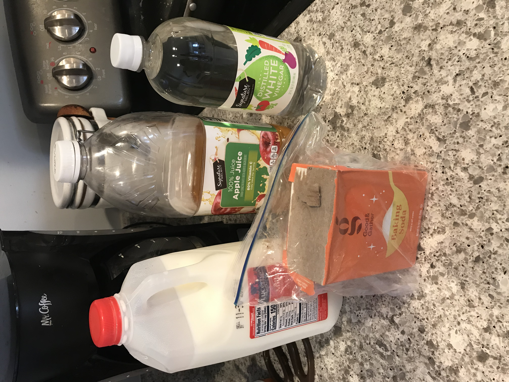
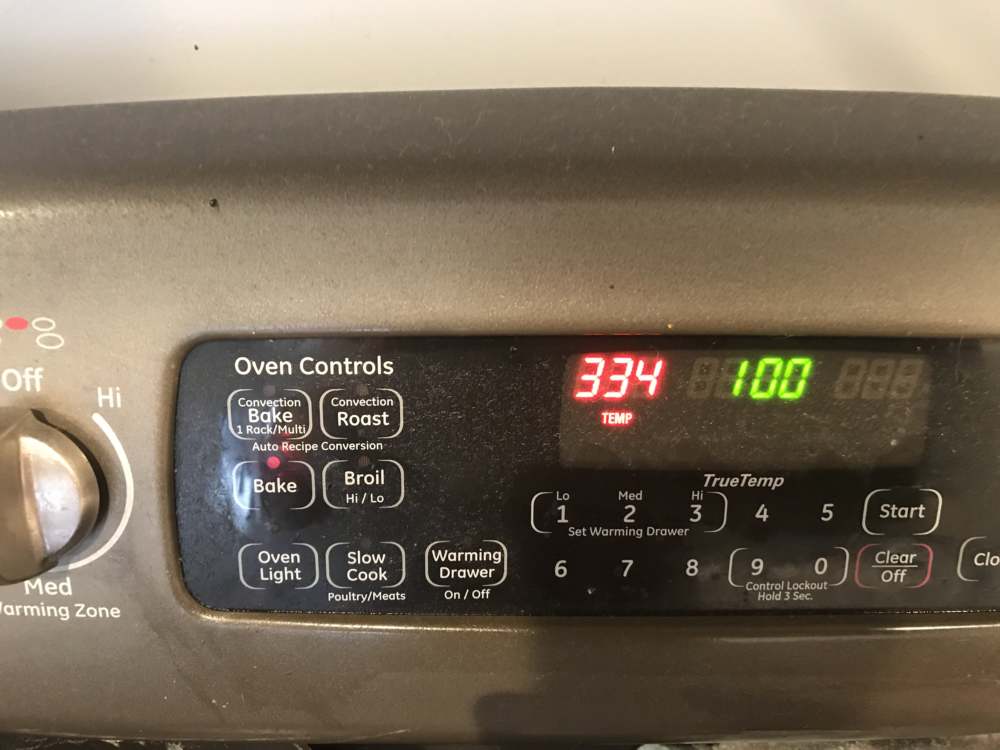
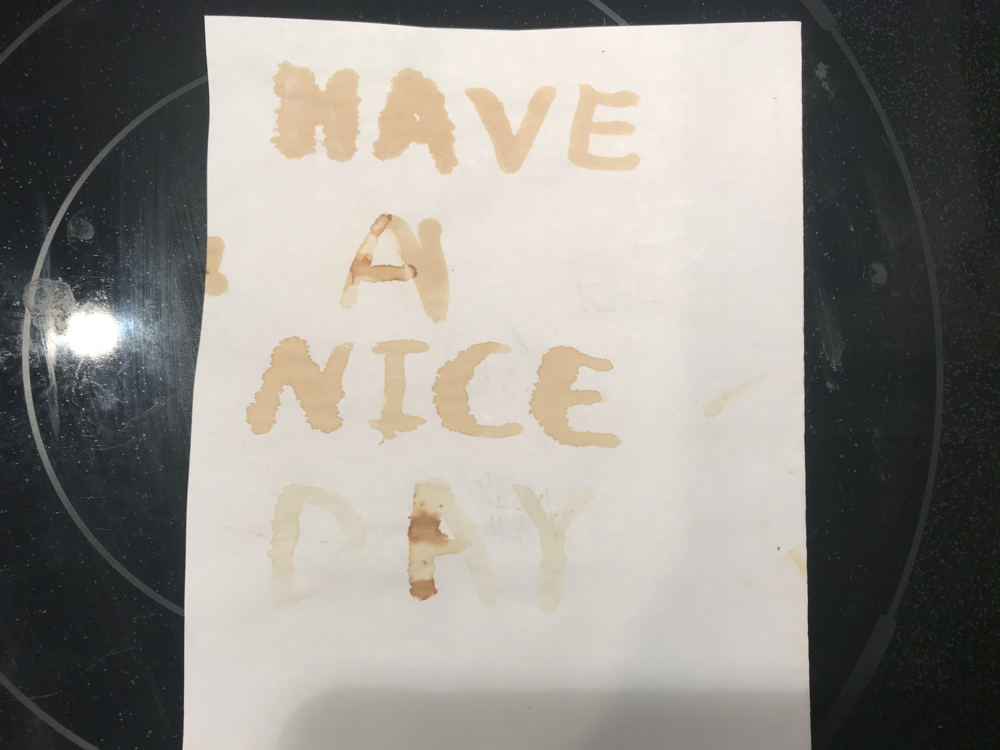

This week, I decoded to make invisible ink at my kitchen following instruction online. As for the materials, I used milk, apple juice, baking soda and distilled white vineger.
I first dissolved the baking soda in some tap water to make it a liquid. Together with the rest of the materials, they were used ink when I used a small brush to write on a piece on paper. I then set the oven to 350 degrees F so the paper can be heated without being burnt.
Picture below shows the final result. I found that baking soda solution took less time to show up and was the most obvious one. Milk showed up well but took a bit longer. Acidic ones (apple juice and vinegar) took very long to show up and the color was very light, while apple juice performed slightly better which I assume was because of its natural color. 